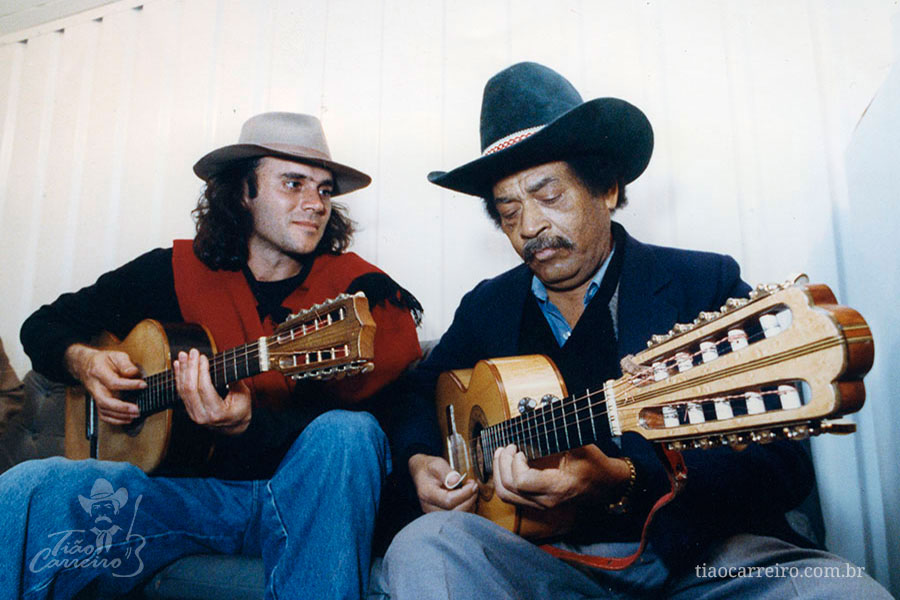
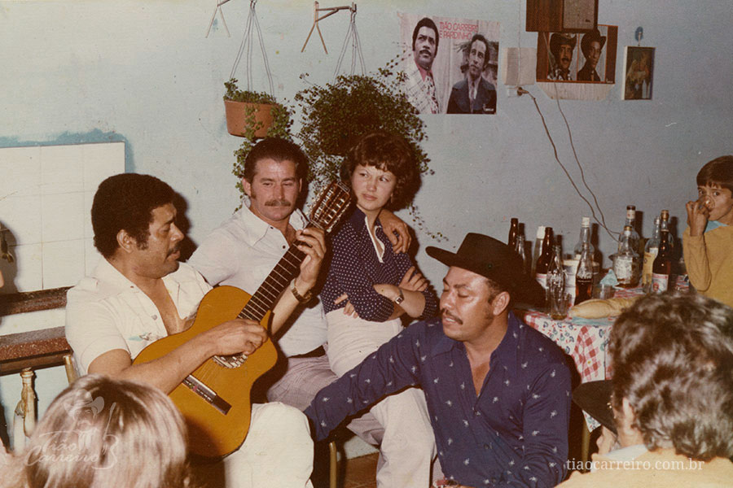
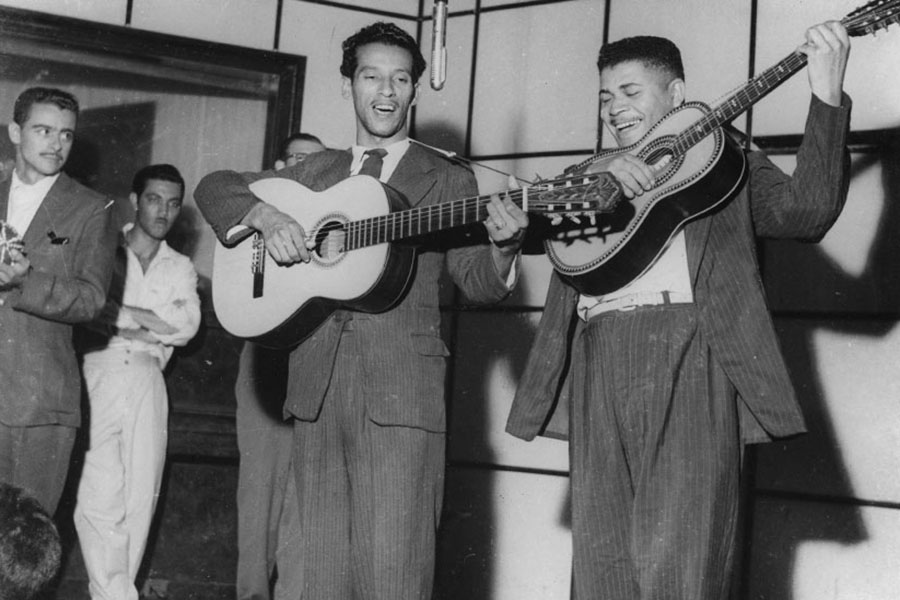
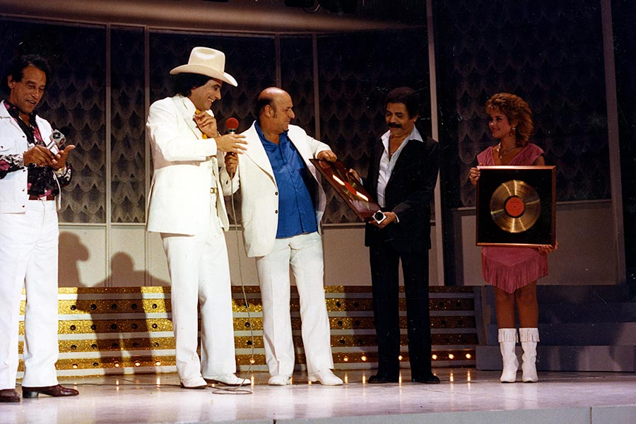
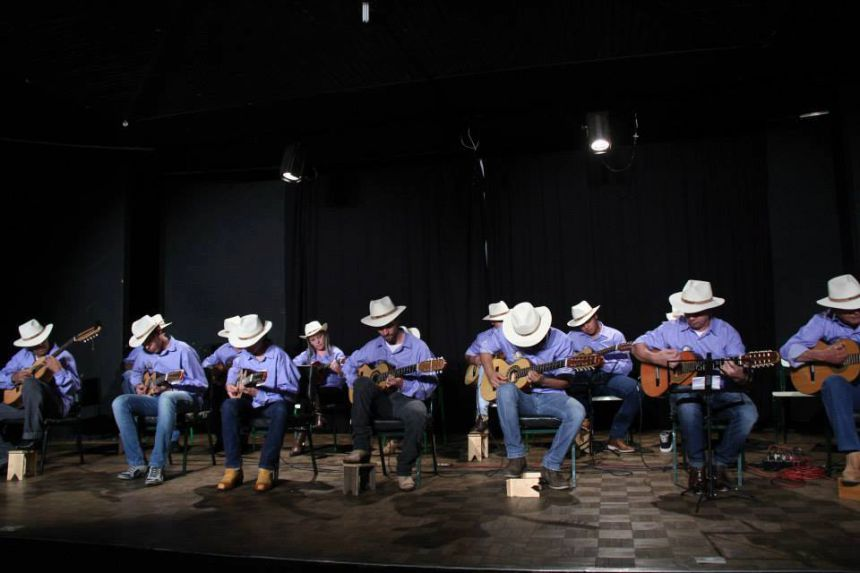
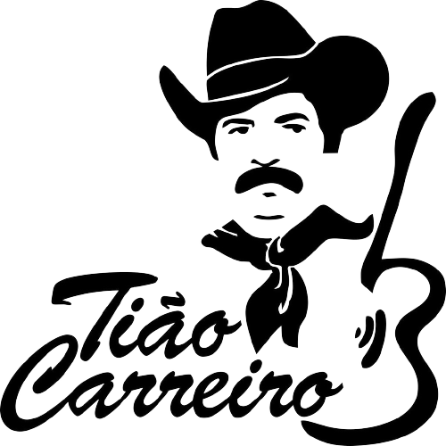

“Morre um homem, fica a fama e minha fama dá trabalho...” Esta frase, trecho da música “A viola e o violeiro”, resume bem o que foi a vida de José Dias Nunes, ou simplesmente Tião Carreiro: um homem à frente do seu tempo e de genialidade musical incontestável que se eternizou;